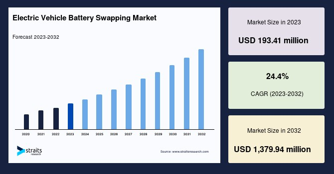
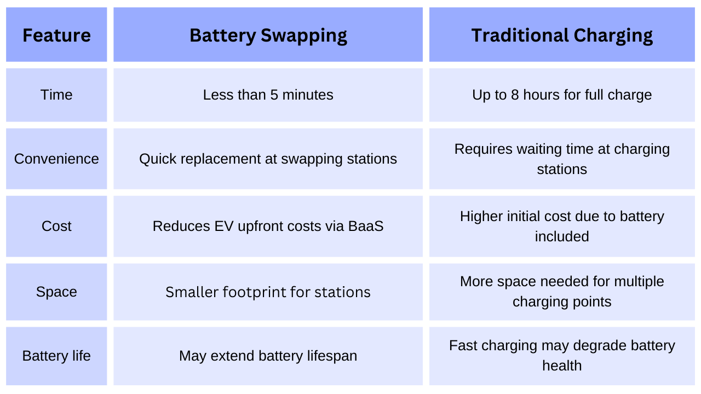
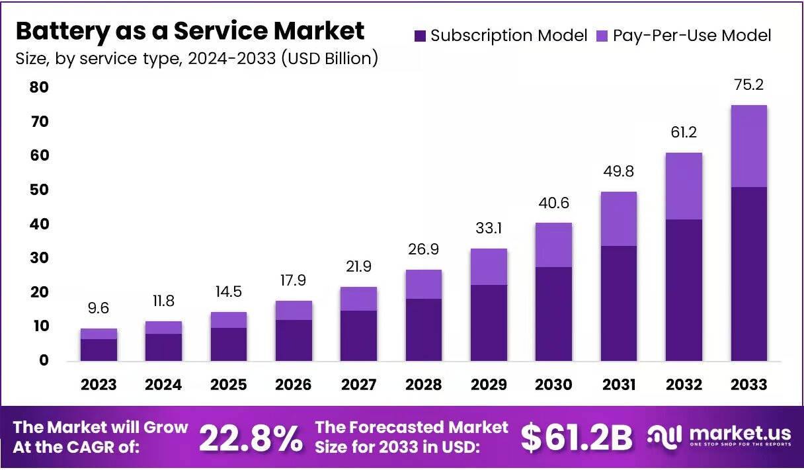
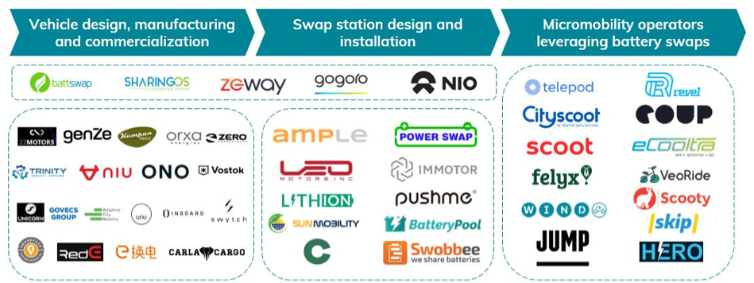
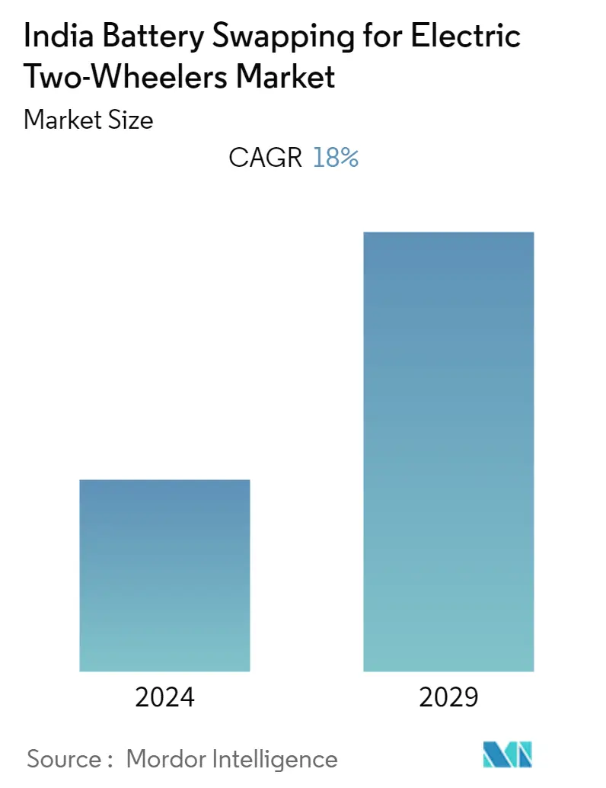

Battery swapping is emerging as a viable solution to some of the key challenges facing EV adoption, such as long charging times and range anxiety. As technology advances and infrastructure develops, battery swapping is expected to play a significant role in the future of electric mobility.
The Rise of Battery Swapping
The global electric vehicle battery swapping market size was valued at USD 240.62 million in 2024. It is expected to reach USD 1,379.94 million in 2032, growing at a CAGR of 24.4% over the forecast period (2024-32).
Electric car battery swapping is when a drained battery or battery pack in an electric vehicle can be swapped out for a fully charged one, obviating the need to wait for the vehicle's battery to charge. Compared to charging stations, battery swapping stations are a more efficient way to address range anxiety, with each battery change taking less than 10 minutes and taking up significantly less space.

Furthermore, due to its impact on lowering the high upfront price of electric vehicles by decoupling battery ownership, battery-as-a-service (BaaS) is gaining traction in the battery swapping market. Battery swapping also minimizes vehicle downtime and acquisition expenses because the customer only pays for the energy used.
The industry is expected to rise because of increased demand for electric vehicles, a shortage of suitable public charging infrastructure, and shorter charging times. However, the market expansion is hampered by differences in battery technology and design and the expensive initial setup and operational costs of battery swapping stations. Furthermore, the increasing proliferation of shared e-mobility and market competitors' adoption of novel and improved battery-swapping models and services will likely provide an attractive potential for market expansion.
Battery Swapping vs. Traditional Charging

Benefits of Battery Swapping
- Reduced Charging Time: Battery swapping is significantly faster than traditional charging methods.
- Range Anxiety Elimination: Drivers can quickly swap out batteries, removing concerns about running out of charge.
- Cost Reduction: Battery swapping can lower the upfront cost of EVs by decoupling battery ownership from the vehicle purchase, using a Battery-as-a-Service (BaaS) model.
- Efficient Land Use: Swapping stations require less space than charging stations. A station can handle a swap every five minutes in an area of 25 square meters.
- Battery Life Extension: Swapped batteries may have a longer lifespan, reducing pollution and ownership costs.
Segmental Analysis
The global electric vehicle battery swapping market share is segmented based on service type and vehicle type.
Based on Service type
The global electric vehicle battery swapping market is bifurcated into Subscription and Pay-per-Use models.
The Subscription Model is the highest market shareholder and is estimated to grow at a CAGR of 23.7% during the forecast period. The battery-swapping subscription model is primarily driven owing to its benefits offered over the pay-per-use model, such as battery leasing, low cost per swapping, and affordability.
The Pay-per-Use Model is the fastest-growing segment. Pay-per-use model is when a customer is charged for specific usage of battery swapping services. Pay-per-use model does not assume a fixed monthly or annual fee; instead, a customer makes a single purchase at a fixed price based on usage. The rise in preference of vehicle drivers to pay as per their usage, owing to the lack of fixed usage pattern of their vehicles, is the primary factor that propels the adoption of the pay-per-use model.

Based on Vehicle type
The global electric vehicle battery swapping market is categorized into Two-Wheeler, Three-Wheeler Passenger Vehicles, Three-Wheeler Light Commercial Vehicles, Four-Wheeler Light Commercial Vehicles, Buses, and Others.
The Two-Wheeler segment holds the highest market share and is estimated to grow at a CAGR of 25.7% during the forecast period. Two-wheelers include electric bikes, electric scooters, and electric bicycles, which have a motor installed to propel the vehicle. They also include a strong battery attached to the vehicle's engine that is responsible for the power supply to the motor.
Three-Wheeler Passenger vehicles include five to seven-seater tempos and e-rickshaws intended to carry passengers from one location to another. Most of the three-wheeler passenger vehicles running across different countries are electric-based, which require a dedicated battery for power supply to the installed motor. For instance, in January 2021, the India-based electric vehicle startup, Zypp Electric , planned to set up 5,000 battery swapping stations for two-wheelers and three-wheelers across the nation over the next three years, followed by an investment of USD 66 million during the period.
The upcoming Euler Motors r's electric three-wheeler light commercial cargo vehicle is an example considered under this segment. The popularity of battery-swapping usage in electric three-wheeler is expected to increase the daily operational hours of such vehicles. Electric three-wheeler LCVs are generally used for load carriages and, on average, run for over 100 km per day.
List of key players in Electric Vehicle Battery Swapping Market
- Amara Raja
- Amplify Mobility
- Esmito Solutions Pvt Ltd
- Gogoro
- ChargeMYGaadi
- EChargeUp Solutions Pvt Ltd Inc
- Lithion Power Pvt Ltd
- NIO, Inc
- Numocity
- Oyika Pte Ltd
- Panasonic India Pvt. Ltd
- Revolt Motors
- SUN Mobility Pvt. Ltd
- TATA Power
- VoltUpcommercial Vehicle

Indian Market for Battery Swapping
Government Initiatives: The Indian government is actively promoting battery swapping through various policies and guidelines. In January 2025, the Ministry of Power, Energy and Mineral Resources (MoP) issued final guidelines for the installation and operation of battery swapping and charging stations to encourage battery-as-a-service models and develop a robust battery swapping ecosystem. These guidelines apply to all entities involved in providing battery swapping services, including owners and operators of battery charging stations (BCSs) and battery swapping stations (BSSs). The government is also providing public land at subsidized rates for Public Charging Stations (PCSs) and offering reduced electricity rates during solar hours.
Market Growth and Projections
The Indian EV battery-swapping market at USD 10.2 million in 2022 and projects it to reach USD 61.57 million by 2030, with a CAGR of 25.20% from 2022 to 2030. The India Battery Swapping for Electric Two-Wheelers Market is growing at a CAGR of 18% over the next 5 years.

Trends and Developments:
- Focus on Lithium-ion Batteries: The rising penetration of lithium-ion batteries for electric two-wheelers in India is driving the growth of battery swapping.
- Partnerships and Expansion: Companies are adopting strategies such as mergers, acquisitions, and collaborations to expand their presence in the market. For example, ElectroRide has partnered with Battery Smart to establish 2,500 battery swapping stations across India.
- Battery-as-a-Service (BaaS): Mooving , for example, has adopted a platform strategy to become a leading provider of battery swapping and battery subscriptions (BAAS) for electric two-wheelers and three-wheelers in the country.
- Smart Swapping Technology: Battery Smart , an EV battery tech startup, facilitates 1 lakh daily swaps on its network. Their battery swapping allows users to replace depleted batteries with fully charged ones in under two minutes.
Challenges and Considerations: Despite the optimistic outlook, challenges remain, including:
- High upfront expenditure for battery charging.
- Longer downtimes.
- The need for parking and charging facilities, which can dissuade drivers from switching to electric alternatives, especially in Tier 1 and Tier 2 cities.
Conclusion
As the ecosystem matures, battery swapping is poised to play a pivotal role in transforming the way we power our vehicles, paving the way for a cleaner and more efficient transportation future.